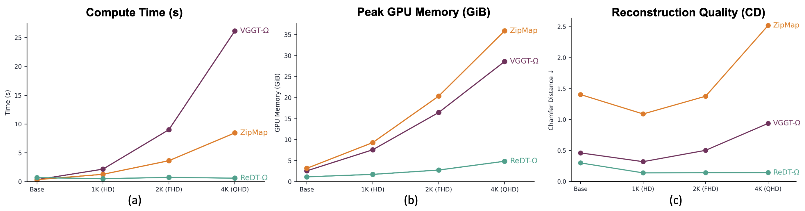
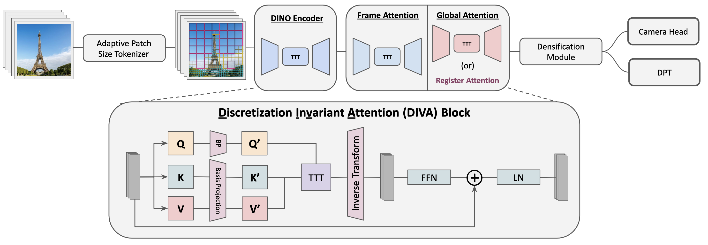

Higher resolution, without the same growth in attention cost

Resolution-Decoupled
Visual Geometry Transformer
1Huawei Noah’s Ark Lab2University of British Columbia
We introduce ReDT, a feed-forward visual geometry transformer designed to scale multi-view reconstruction to high-definition (HD) inputs, including 2K (FHD). Existing visual geometry models are typically trained at fixed, standard definition (SD) resolutions and exhibit degraded reconstruction quality and poor computational scaling to high input resolutions. While recent efficient architectures reduce the complexity of inter-frame attention, expensive within-frame and backbone attention remain largely unaddressed, making HD reconstruction impractical with existing architectures. ReDT addresses both limitations with a resolution-aware architecture designed to scale to high-resolution inputs. The key idea of ReDT is to first map each view to a fixed-size set of basis tokens, compute correspondences in this compact constant-size basis space, and then project the outputs back to the original resolution for dense prediction. By decoupling the internal representation from input resolution during attention, ReDT substantially reduces the computational cost of high-resolution 3D reconstruction and improves model performance at all resolutions. Across multiple datasets spanning SD to FHD (2K) inputs, we empirically demonstrate ReDT’s superior scalability, achieving more than a 16× speedup, a 34.3% reduction in peak GPU memory usage, and a 63.2% reduction in chamfer distance over VGGT-Ω.
ReDT projects image features into a compact basis, then returns them to the original resolution for dense prediction.
In the ETH3D resolution sweep, ReDT-Ω maintains low reconstruction error as input resolution increases beyond HD.
ReDT-Ω achieves the lowest Chamfer Distance among the evaluated methods on all four HD reconstruction benchmarks.
At 2K resolution, ReDT-Ω takes 6.35 s versus 102.70 s for VGGT-Ω in the reported benchmark.
Adaptive patch-size tokenization assigns fewer tokens to redundant regions. Discretization Invariant Attention (DIVA) then separates the attention budget from the number of image tokens. Dense prediction heads receive the reconstructed spatial features.

More pixels should reveal more detail. The manuscript’s ETH3D experiments show that conventional attention can instead become slower and less accurate as resolution grows. ReDT decouples the spatial sampling from its latent attention representation.

Reconstruction quality and inference time. ReDT uses the VGGT backbone; ReDT-Ω uses VGGT-Ω and is the primary model. ReDT-Ω achieves the lowest CD and shortest runtime among the evaluated methods on all four HD reconstruction datasets.
| Method | CD ↓ | Time (s) ↓ | Speedup ↑ |
|---|---|---|---|
| VGGT | 23.0525 | 59.00 | 1.00× |
| VGGT-Ω | 11.8681 | 28.67 | 2.06× |
| π³ | 12.7053 | 55.52 | 1.06× |
| DepthAnything3 | 14.3069 | 20.90 | 2.82× |
| FastVGGT | 23.0125 | 21.32 | 2.77× |
| FlashVGGT | 32.0492 | 9.15 | 6.45× |
| ZipMap | 13.9967 | 7.83 | 7.54× |
| ReDT | 12.6891 | 6.27 | 9.41× |
| ReDT-Ω | 11.0931 | 3.05 | 19.34× |
| Method | CD ↓ | Time (s) ↓ | Speedup ↑ |
|---|---|---|---|
| VGGT | 1.0481 | 58.90 | 1.00× |
| VGGT-Ω | 0.1362 | 28.67 | 2.05× |
| π³ | 0.3649 | 55.45 | 1.06× |
| DepthAnything3 | 0.1081 | 20.89 | 2.82× |
| FastVGGT | 0.8946 | 21.31 | 2.76× |
| FlashVGGT | 0.9762 | 9.13 | 6.45× |
| ZipMap | 0.6663 | 7.84 | 7.51× |
| ReDT | 0.1388 | 5.59 | 10.54× |
| ReDT-Ω | 0.0501 | 3.16 | 18.64× |
| Method | CD ↓ | Time (s) ↓ | Speedup ↑ |
|---|---|---|---|
| VGGT | 9.8623 | 116.88 | 1.00× |
| VGGT-Ω | 1.0299 | 102.66 | 1.14× |
| π³ | 3.5208 | 109.46 | 1.07× |
| DepthAnything3 | 2.5909 | 80.91 | 1.44× |
| FastVGGT | 8.3933 | 84.29 | 1.39× |
| FlashVGGT | 8.4182 | 36.63 | 3.19× |
| ZipMap | 9.3427 | 28.84 | 4.05× |
| ReDT | 1.5524 | 12.21 | 9.57× |
| ReDT-Ω | 0.9575 | 6.84 | 17.09× |
| Method | CD ↓ | Time (s) ↓ | Speedup ↑ |
|---|---|---|---|
| VGGT | 2.5660 | 118.02 | 1.00× |
| VGGT-Ω | 0.1702 | 102.70 | 1.15× |
| π³ | 0.7768 | 108.79 | 1.08× |
| DepthAnything3 | 0.3158 | 80.88 | 1.46× |
| FastVGGT | 2.4710 | 84.30 | 1.40× |
| FlashVGGT | 2.7161 | 36.46 | 3.24× |
| ZipMap | 1.7539 | 28.83 | 4.09× |
| ReDT | 0.5476 | 12.49 | 9.45× |
| ReDT-Ω | 0.1140 | 6.35 | 18.59× |
Reading the tables. Summed Chamfer Distance (CD) and runtime in seconds; lower is better for both. Speedup is VGGT runtime divided by each method’s runtime for the same benchmark, rounded to two decimals (higher is better; VGGT = 1.00×). Bold marks the lowest CD and runtime, including ties. Blue shading identifies the ReDT variants. CD and runtime retain the manuscript’s precision.
Evaluation. The supplied benchmarking protocol fine-tunes the baselines using the same training protocol as ReDT. Model computation uses BF16. These benchmark timings are distinct from the 20-view scaling analysis above, whose runtime and memory plots exclude task heads.
| Method | CD ↓ | Time (s) ↓ | Speedup ↑ |
|---|---|---|---|
| VGGT | 0.421 | 4.9 | 1.00× |
| VGGT-Ω | 0.500 | 2.0 | 2.45× |
| π³ | 0.471 | 3.6 | 1.36× |
| DepthAnything3 | 0.461 | 1.6 | 3.06× |
| FastVGGT | 0.416 | 2.8 | 1.75× |
| FlashVGGT | 0.454 | 1.3 | 3.77× |
| ZipMap | 0.465 | 1.6 | 3.06× |
| ReDT | 0.420 | 1.6 | 3.06× |
| ReDT-Ω | 0.416 | 1.5 | 3.27× |
| Method | CD ↓ | Time (s) ↓ | Speedup ↑ |
|---|---|---|---|
| VGGT | 0.429 | 33.6 | 1.00× |
| VGGT-Ω | 0.531 | 13.0 | 2.58× |
| π³ | 0.480 | 25.5 | 1.32× |
| DepthAnything3 | 0.516 | 9.9 | 3.39× |
| FastVGGT | 0.430 | 12.3 | 2.73× |
| FlashVGGT | 0.459 | 5.0 | 6.72× |
| ZipMap | 0.474 | 4.6 | 7.30× |
| ReDT | 0.428 | 4.3 | 7.81× |
| ReDT-Ω | 0.431 | 4.2 | 8.00× |
| Method | CD ↓ | Time (s) ↓ | Speedup ↑ |
|---|---|---|---|
| VGGT | 0.442 | 90.1 | 1.00× |
| VGGT-Ω | 0.548 | 33.7 | 2.67× |
| π³ | 0.479 | 67.4 | 1.34× |
| DepthAnything3 | 0.524 | 25.1 | 3.59× |
| FastVGGT | 0.437 | 28.4 | 3.17× |
| FlashVGGT | 0.464 | 10.2 | 8.83× |
| ZipMap | 0.483 | 7.7 | 11.70× |
| ReDT | 0.446 | 7.1 | 12.69× |
| ReDT-Ω | 0.451 | 6.7 | 13.45× |
| Method | CD ↓ | Time (s) ↓ | Speedup ↑ |
|---|---|---|---|
| VGGT | 0.118 | 4.5 | 1.00× |
| VGGT-Ω | 0.034 | 1.9 | 2.37× |
| π³ | 0.032 | 1.6 | 2.81× |
| DepthAnything3 | 0.065 | 1.5 | 3.00× |
| FastVGGT | 0.109 | 2.7 | 1.67× |
| FlashVGGT | 0.035 | 1.3 | 3.46× |
| ZipMap | 0.059 | 1.5 | 3.00× |
| ReDT | 0.033 | 1.5 | 3.00× |
| ReDT-Ω | 0.033 | 1.5 | 3.00× |
| Method | CD ↓ | Time (s) ↓ | Speedup ↑ |
|---|---|---|---|
| VGGT | 0.115 | 38.1 | 1.00× |
| VGGT-Ω | 0.033 | 14.6 | 2.61× |
| π³ | 0.033 | 28.7 | 1.33× |
| DepthAnything3 | 0.064 | 11.0 | 3.46× |
| FastVGGT | 0.115 | 14.2 | 2.68× |
| FlashVGGT | 0.033 | 5.7 | 6.68× |
| ZipMap | 0.057 | 4.9 | 7.78× |
| ReDT | 0.032 | 4.5 | 8.47× |
| ReDT-Ω | 0.032 | 4.4 | 8.66× |
ScanNet is distinct from ScanNet++. Sequence lengths and sparse/dense sampling follow the manuscript’s standard-definition benchmark table.
Compare depth maps, camera trajectories, and point clouds across dynamic and static HD scenes. Each figure keeps the same ordering: input, VGGT, VGGT-Ω, ZipMap, and ReDT. Select a scene below, or open a figure at full resolution to inspect the details.
@misc{redt,
title = {ReDT: Resolution-Decoupled Visual Geometry Transformer},
author = {Abteen Arab and Guile Wu and Dongfeng Bai},
note = {Manuscript}
}